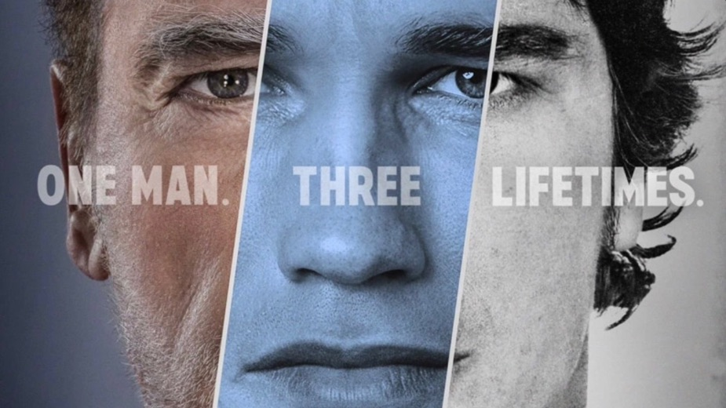
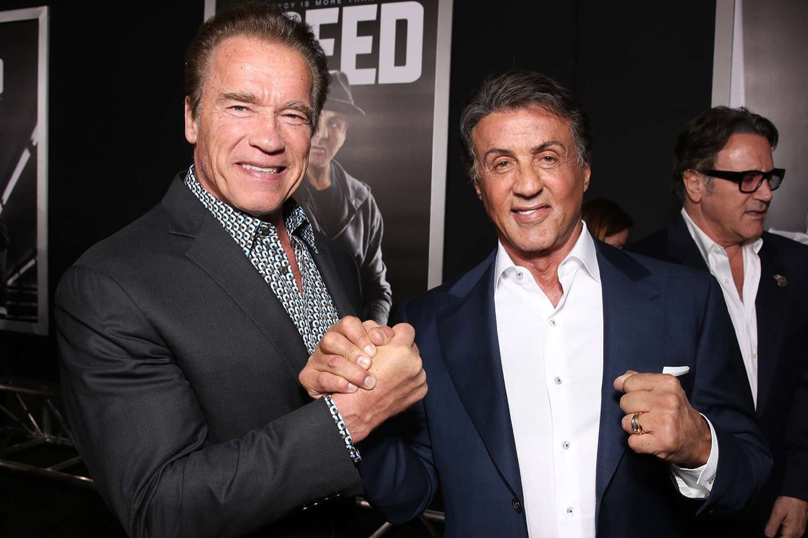
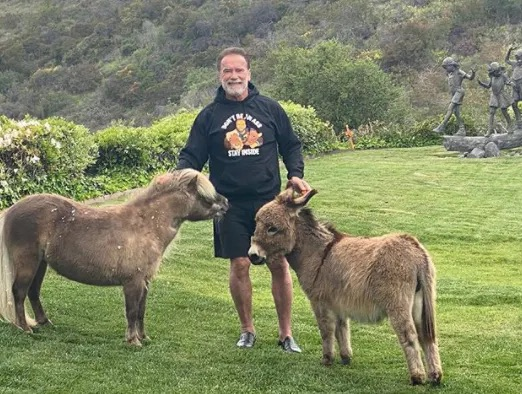

17 Life lessons I learnt from Arnold Schwarzenegger

I'm a big fan of Arnold Schwarzenegger, he's been successful at nearly everything he's done, so there is a lot to learn from him.
I've read all his books and followed him with interest. So when the new ARNOLD Netflix series came out, I was PUMPED UP to watch it.
And, while watching it, I scribbled down 17 life lessons that I took away, as you might know I'm all about personal development, so this documentary series was right up my street. So here are 17 things I learnt from ARNOLD (The Netflix Series) Schwarzenegger
Which is a 10/10 btw, watch it.

1. Silence is important.
Block out the noise and spend a lot of time visualising what you want for your future and how you’re going to get it.
Arnold spend hours training doing this, focus on his goals and visualising his future.
2. His formula for success was simple, but it was intentional.
In the early days it was ONE goal, to get jacked. So he walked into the gym and did 20 sets of exercises per workout tracking it on chalk board.
Intentional, focused, and look what happened!
3. Visual imagery helps you create your vision for your future.
While other boys his age had girls on their bedroom wall, he had images of what he wanted to achieve, spending a lot of time visualising his future and how.
4. He was always making the next move.
He never tried to make the perfect move, he just kept taking one step closer. He didn’t always know how to get to the destination, but one step closer was one step closer, the next step could be figured out after that.
5. He wasn't ever afraid to ask for help.
And people helped. They saw he was serious about his goal, they found that inspiring, so they helped him, in one case helping him raise money for his first US body building competition – because they could see he could do it and was serious about it
6. He minimised distractions.
He lived in the gym, had a few items of clothing he really needed, a mixer to mix his protein, and the gym, that's all he needed to achieve his #1 goal, so that's all he had.
No distractions. No shiny things. Just the tools to get the job done.
7. He would learn off anyone.
He had the humility to not shun a ballet teacher and learn from her, this ballet teacher taught him how to perform on stage, which is what he needed for the biggest stage of all, to be a performer, not just a guy with muscles
Many others egos would have got in the way here, and limited their potential.
8. He knew the power of environment.
He put himself in environments to get noticed, to get the opportunity, to get lucky
The only way to get noticed, or to learn, or to be inspired by others like you, is to be in the room.

9. He never plays the victim, ever.
He always accepted the world around him, controlled what he can control, and got his hands dirty with progress towards the goal.
10. Pain, anger and competition can be excellent motivators.
We often see them as negative drivers in society, don’t. Use them as a driving force to succeed, to prove them wrong, to prove to yourself you can do it.
Just ensure you have good people around you to point out when it goes too far or starts to become unhealthy
11. Not Arnold, but it was a great quote
Early to bed, early to rise, work like hell and advertise
Ted turner
12. Stay hungry.
Always have a mission, stay busy with a focus. Even when Arnold doesn't have a professional focus he might have a personal focus.
In the series you see he had a mission with his animals, which gave him purpose and a routine

13. Always be selling yourself.
He took every opportunity to sell himself, what he can do, and his abilities. He believed in himself and wasn’t scared to show that.
Life requires us to sell ourselves, it’s required to step up to your potential
14. The power of a positive/healthy routine
His success is anchored in the basics. Every day he eats well. Exercises. Walks outside. Sleeps like a baby. And has a purposeful focus.
He’s 75 and still crushing life.
15. Be useful.
There will always be great satisfaction in being useful and serving others.
16. Don't have an affair, it f***s everything up
This impulse control got the better of him, and it seems to be his #1 regret.
We’re all human, we make mistakes, but some you just shouldn’t make.
17. Always have fun
Within all of this positive advice and his motivational vibe is him always having fun. All of this was fun for him because he was so passionate about everything he turned his hand to and loved the people he surrounded himself with. He was always laughing and joking and enjoying the ride, showing us that the path to more, to success, to the heights of a career can be fun, enjoyable and rewarding.
So there it is, my 17 big takeaways from The Netflix Series ARNOLD.
It’s quality, A proper 10/10 for me. So many life lessons were dropped. Might even watch it again!!
The 3 big takeaways I personally took from it to improve on, for myself, were
1. Always be selling yourself
2. Don’t get distracted
3. Use competition as a motivator, channel that frustration for good use as it's powerful
These 3 are relevant to me right now in my next phase of life professionally. You?
Have you watched it? What was your big 3 take aways?
Connect with me on social media and tell me, I'd love to know
🤜🤛
p.s. if you want a BIG life lessons book, have you checked out mine?
Visit my homepage to check it out, and before you buy it, do my free AWESOME Score 💪🏻